2登入
- 打開課堂冒險局網址，輸入管理員給你的登入名稱及密碼。
- 第一次登入會要求你改密碼。
- 每位老師的班別、學生及禮物各自獨立，其他老師看不到。
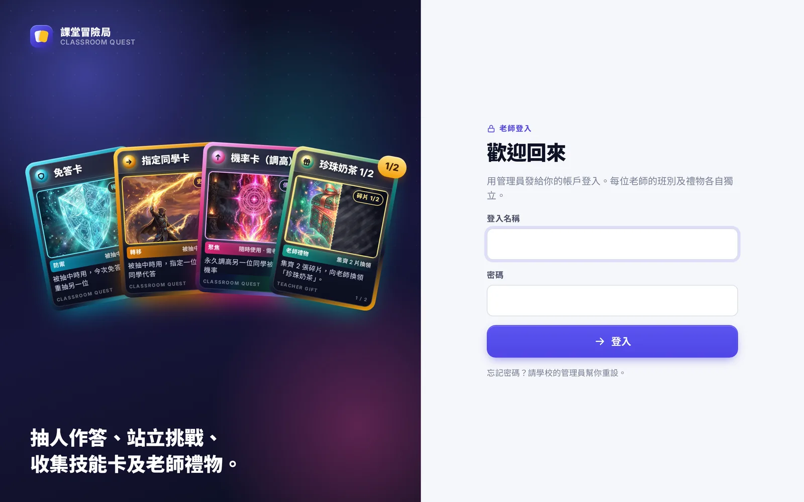
登入畫面
忘記密碼？請學校的管理員幫你重設（見第 13 節）。右上角頭像可改顯示名稱、改密碼及登出。
3建立班別及點名
- 在右邊輸入班名，再貼上學生名單：每行一位，可寫「座號 姓名」，例如 1 陳大文。
- 按 建立班別。
- 點名：點一下學生即標示缺席，缺席的同學不會被抽中。
- 按 開始上堂。
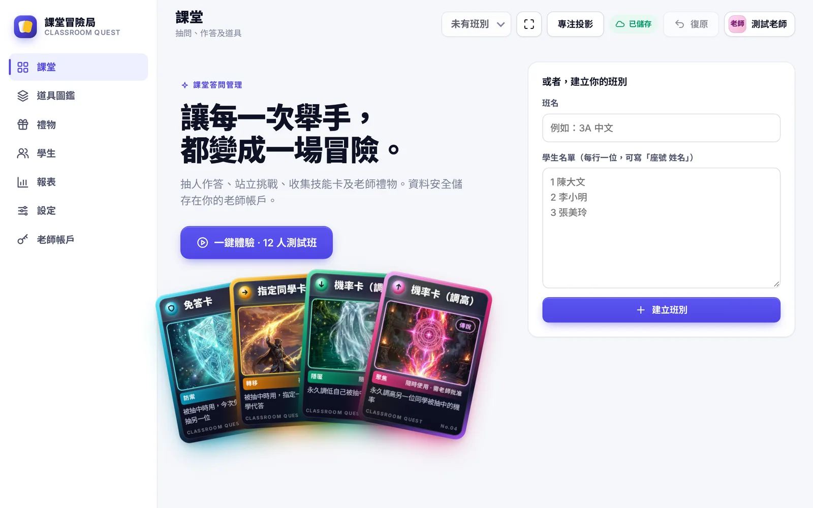
建立班別（想先試玩可按「一鍵體驗」）
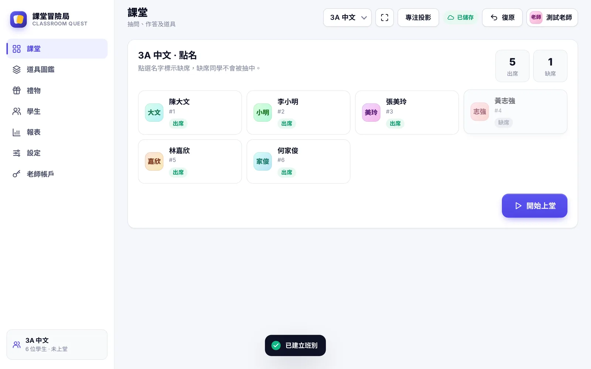
點名：黃志強已標示缺席
想先試玩？按 一鍵體驗 · 12 人測試班，會建立 12 位虛構學生及 3 份測試禮物，每人已有四種技能卡。
4認識上課畫面
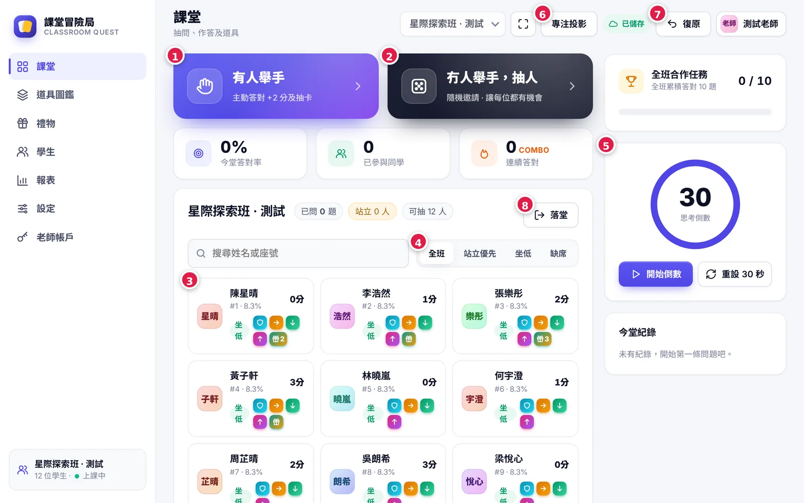
上課主畫面
- 1有人舉手：揀舉手的同學作答。
- 2冇人舉手，抽人：系統隨機抽一位。
- 3學生卡：點一下打開背包、改狀態。
- 4篩選：全班、站立優先、坐低、缺席；左邊可搜尋姓名或座號。
- 5思考倒數：預設 30 秒。
- 6專注投影：隱藏側欄，適合投影給學生看。
- 7復原：按錯了？退回上一步。
- 8落堂：結束這一堂，顯示小結。
學生卡上的小圖示
◆免答卡 →指定同學卡 ↓機率卡（調低） ↑機率卡（調高） 禮禮物碎片
名字下的百分比是這一刻被抽中的機會。上方的「全班合作任務」累積答對 10 題即完成，可作全班獎勵。
5有人舉手
有人舉手→點舉手的同學→答對 / 答錯→翻開獎勵卡
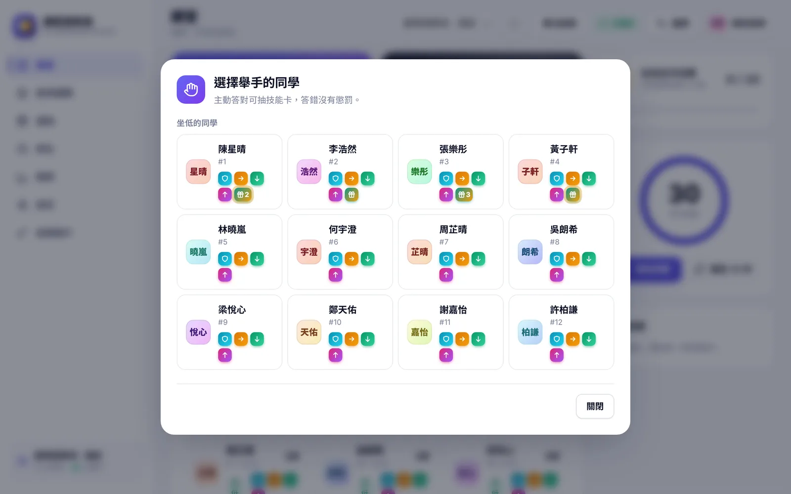
揀舉手的同學（站立的同學排最前，標示「優先」）
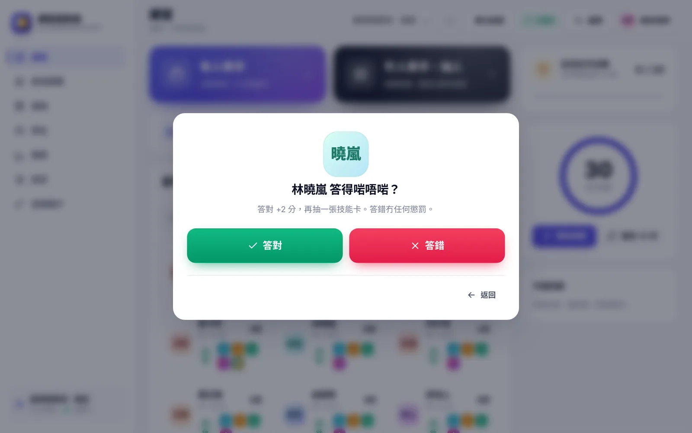
按「答對」或「答錯」
答對：+2 分，卡牌翻開，可能是技能卡或禮物碎片
主動舉手答錯沒有任何懲罰，鼓勵同學大膽嘗試。
6冇人舉手，抽人
- 按 冇人舉手，抽人，名字會滾動，然後停在被抽中的同學。
- 如果同學有免答卡或指定同學卡，畫面會出現按鈕，同學可以選擇使用。
- 按 答對（+1 分）或 答錯（罰站）。
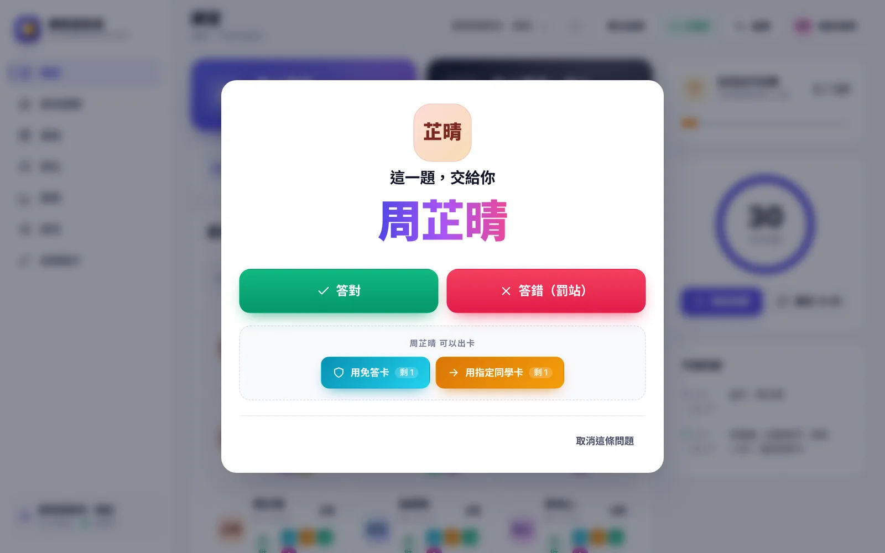
抽中周芷晴，她可以用免答卡或指定同學卡
剛答完的同學，之後 3 題被抽中的機會會減半（防連抽），可在「設定」關閉。
8四種技能卡
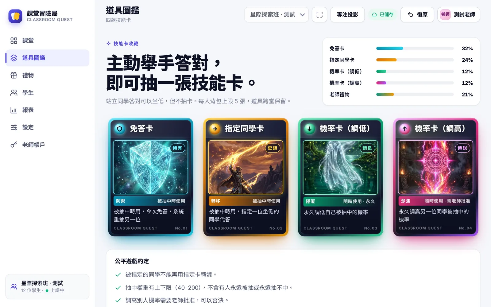
「道具圖鑑」頁：四張卡及目前的抽中機率
| 卡 | 甚麼時候用 | 效果 |
|---|
| ◆免答卡 | 被抽中時 | 今次不用答，系統重抽另一位 |
| →指定同學卡 | 被抽中時 | 指定一位坐低的同學代答；代答答錯由他站 |
| ↓機率卡（調低） | 隨時 | 永久調低自己被抽中的機會 |
| ↑機率卡（調高） | 隨時，需老師批准 | 永久調高另一位同學被抽中的機會 |
學生背包
點學生卡打開背包，可以看到技能卡、禮物碎片，及使用調低／調高卡。每人最多 5 張技能卡（禮物碎片不計）。
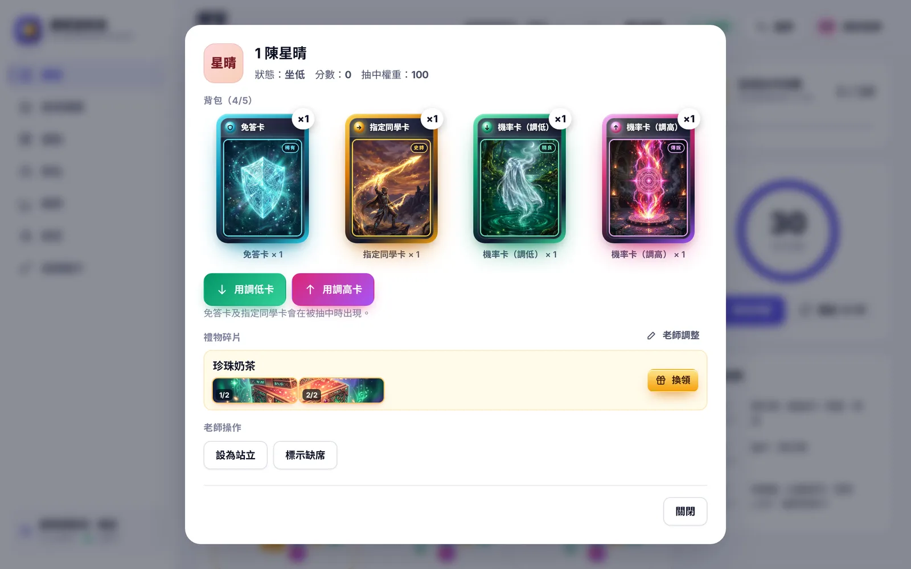
學生背包：技能卡、禮物碎片及老師操作
公平約定：被指定的同學不能再用指定卡轉給別人；被抽中的機會有上下限，不會有人永遠不被抽或被針對；老師可否決調高卡。
9老師禮物（碎片）
你可以把真實獎賞變成卡，例如「珍珠奶茶」。每份禮物可分成 1 至 4 張碎片。
珍珠奶茶 1/2+珍珠奶茶 2/2→集齊，可以換領
- 到「禮物」頁，按 新增禮物。
- 填禮物名稱，揀分成幾張碎片。
- 抽中比重：數字越大越容易抽中（技能卡合共約 100）。
- 可換份數：例如只有 3 杯就填 3；留空代表不限。
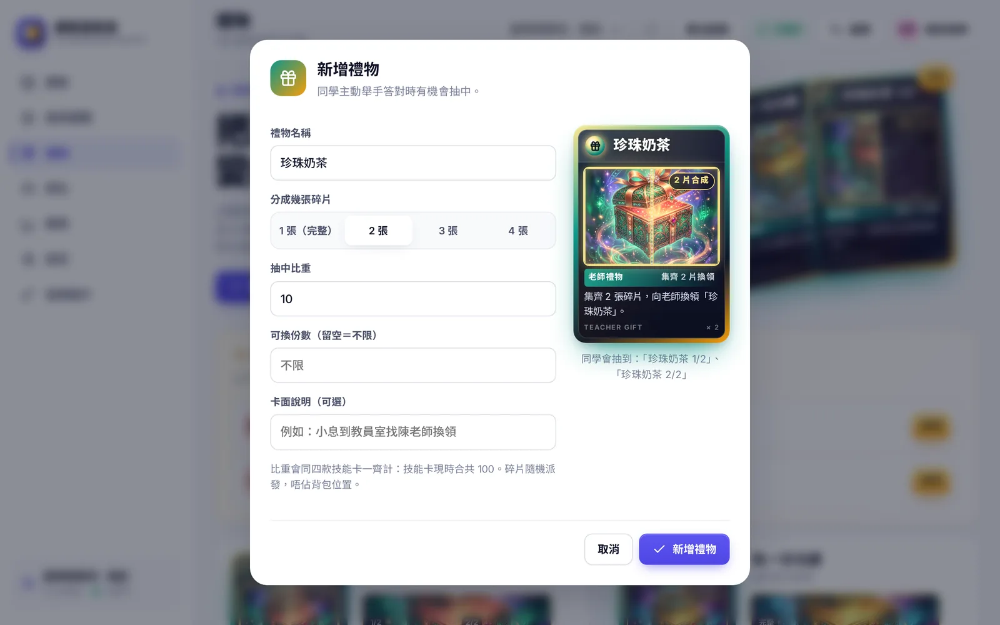
新增禮物：右邊即時預覽卡面
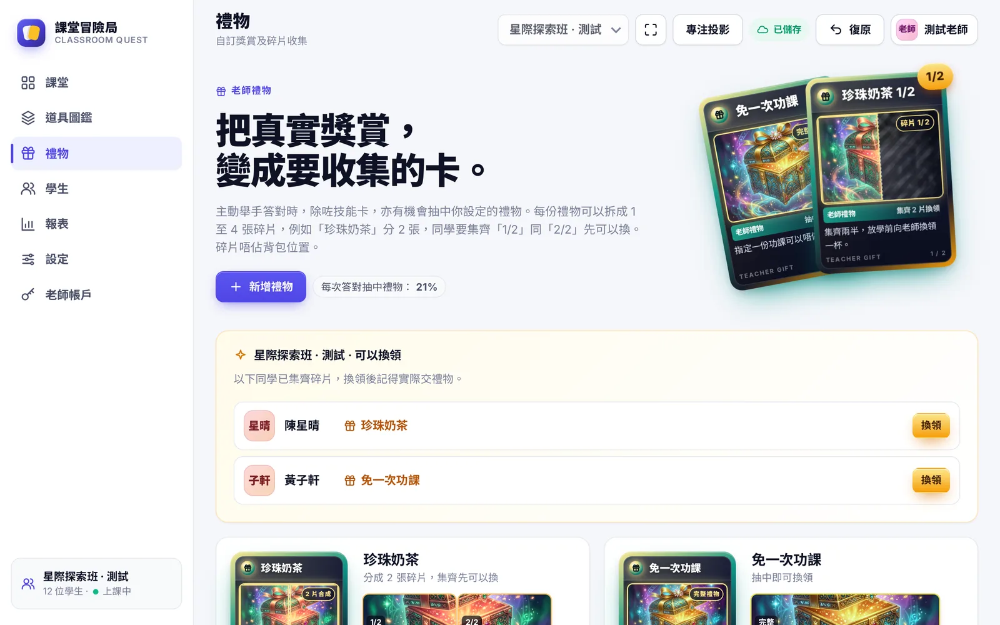
「可以換領」列出已集齊的同學
同學集齊後，在「禮物」頁或學生背包按 換領，碎片會收回，然後把真實禮物交給同學。
11設定
- 計分：主動答對、被抽中答對、代答、站立者答對各得幾分。
- 道具機率：四種技能卡的比重。
- 抽中權重：預設 100，每張機率卡加／減 20，最低 40、最高 200。
- 其他：背包上限、防連抽、動畫開關。
- 備份：下載或還原整份資料。
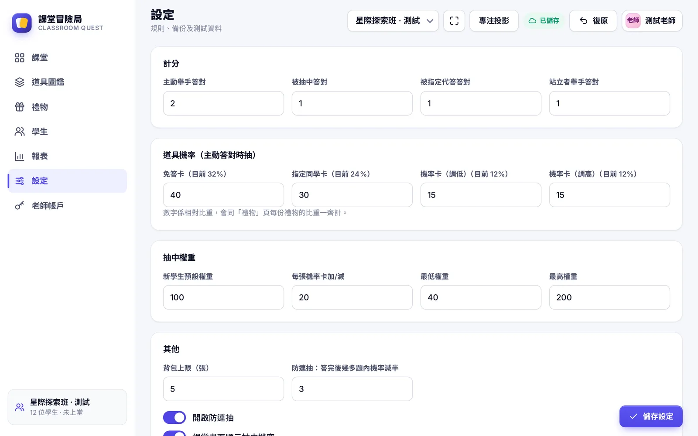
設定頁（改完記得按「儲存設定」）
「學生」頁可以改名、加減學生，及手動調整每人的技能卡數量。
13管理員：老師帳戶
只有管理員會看到「老師帳戶」頁。老師可以同時是管理員。
- 右邊填顯示名稱及登入名稱（英文小寫、數字、點）。
- 系統會產生臨時密碼，按 新增老師，把名稱及密碼交給該老師。
- 老師第一次登入時要自行改密碼。
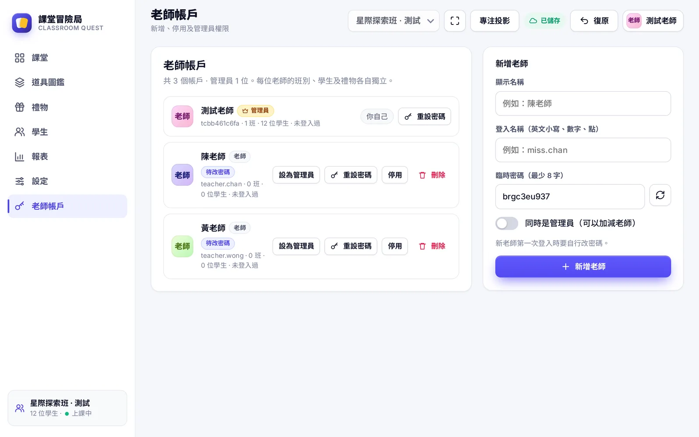
老師帳戶：設為管理員、重設密碼、停用、刪除
系統最少要保留一位管理員。停用可暫停登入而保留資料；刪除會移除該老師的帳戶。
14常見問題
按錯了怎麼辦？
按右上角 復原，可一步一步退回。
資料存在哪裏？
存在學校的伺服器，換電腦登入同一帳戶即可繼續。建議學期中在「設定」下載一次備份。
上堂中可以轉班嗎？
要先按「落堂」，才可以在上方選單轉班。
某位同學一直被抽中？
抽中機會已計入機率卡及防連抽，每位同學的百分比顯示在學生卡上。
可以手動送卡或碎片嗎？
可以。點學生卡 → 禮物碎片旁的 老師調整；技能卡在「學生」頁調整。